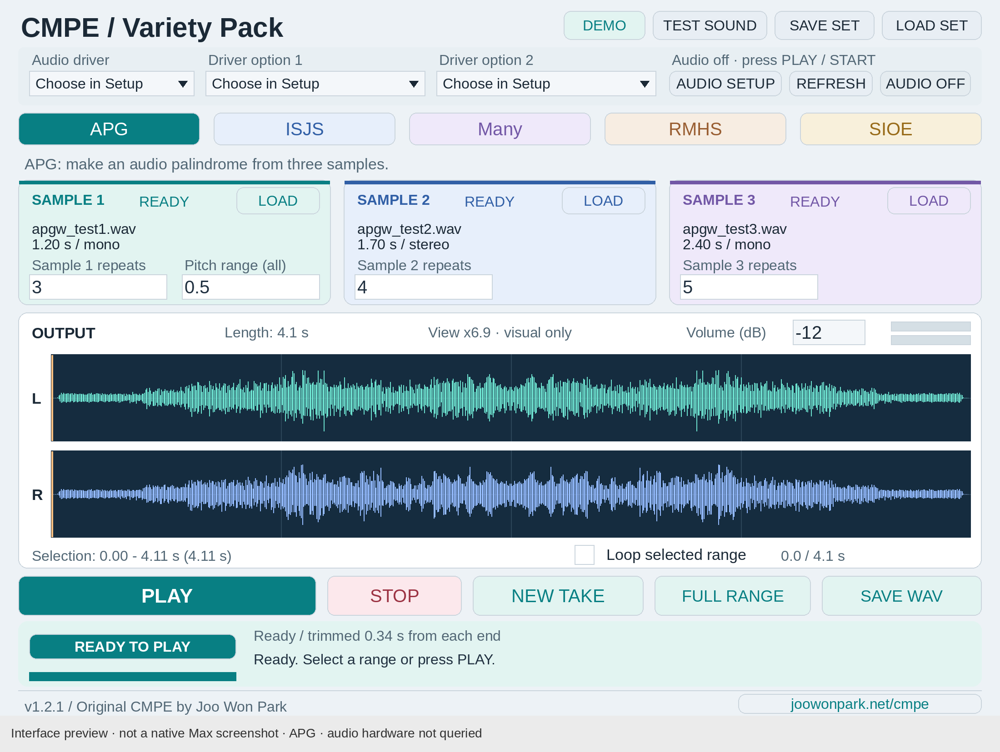

CMPE Variety Pack · Standalone Max · Version 1.2.1
One folder. Five instruments.
An audio palindrome, sample grains, ambient layers, harmonic drones, and audio supercuts. Start with the main patch below.
The main file to open
CMPE_Variety_Pack.maxpat
- Extract the complete ZIP. Keep the entire CMPE_Max folder together.
- In that folder, open CMPE_Variety_Pack.maxpat in Max. It contains all five instruments.
- Choose your audio output in the top controls, or open AUDIO SETUP. Use TEST SOUND to check the output.
- The three included demo samples load automatically. Choose an instrument, then press GENERATE + PLAY or START.
The .js, voice patches, and demo WAV files are required. Keep them beside the main patch. Close an older copy of the patch before opening this version.
Designed for Max 8 or Max 9 using stock Max/MSP objects. Python and Node.js are build tools; neither is required to play this folder.
Choose an instrument
| Instrument | What it does | Sources | Starting behavior |
|---|---|---|---|
| APG | A mirrored audio palindrome | Three samples | Generates a waveform, then plays |
| ISJS | Sample grains shaped with a position/density pad | Three samples | Starts live |
| Many | Overlapping ambient sample layers | Sample 1 | Layers fade in over 2–4 seconds |
| RMHS | An evolving harmonic drone | No samples | Partials enter over 3–20 seconds |
| SIOE | A short or gradually developing audio supercut | Sample 1 | Generates a waveform, then plays |
The selected instrument has a distinct color and a visible name. Sample cards also use numbered labels and color. Use LOAD to choose mono or stereo WAV/AIFF files while stopped. DEMO reloads the included sounds.
Many and RMHS deliberately fade in. Their activity labels explain that wait. ISJS and Many continue until stopped; RMHS finishes after its planned voices have faded out.
Read what the patch is doing
The status badge, progress, and message beside the transport describe the current operation. Color reinforces the text; the label tells you what is happening.
Source audio is being read. Each required sample card reports its own loading or ready state.
APG is checking the quiet beginning and ending before building the trimmed result.
The finite waveform is being generated. Progress reports actual work completed; CANCEL stops generation.
A complete waveform is available. PLAY reuses it without generating another take.
The transport is running. Watch the moving playhead or live scopes, elapsed time, and output meters.
The displayed waveform belongs to the previous settings. GENERATE + PLAY creates the changed result.
There is no complete new take. Read the message before generating again.
An armed live recorder begins with START. RECORDING confirms that capture is running.
Waveform and loops
APG and SIOE show the stored stereo result. The waveform is enlarged automatically for visibility; its view scale changes the drawing only. Playback and exported audio levels do not change.
Drag across either waveform channel to choose a range. Enable Loop selected range to repeat it, or use FULL RANGE to restore the complete piece. The playhead and time show playback position.
Transport
GENERATE + PLAY makes the required result and then starts playback. NEW TAKE generates a fresh randomized result and leaves it ready. STOP / CANCEL stops playback or preparation. The live instruments use START, with RESET or RANDOMIZE for their stopped settings.
Live scopes show the current signal, not a saved recording. Unavailable controls are visibly muted. Changes to source files or generation settings can make an existing finite waveform out of date.

Audio output and saving
The top Driver and two option menus use the labels and choices supplied by Max. Choose the interface in the menu bearing the appropriate device label. AUDIO SETUP opens the complete native settings for output routing, sample rate, and buffer size. REFRESH reads the current choices again.
Device changes and AUDIO SETUP stop this patch’s current performance and turn Max audio off. Press PLAY/START or the audio power button when the output is ready. The power status reflects Max’s reported state; it does not select hardware automatically.
If there is no sound, try TEST SOUND first, check the listening Volume (dB), and confirm the output device and physical level. For a long start, check whether the patch is loading, rendering, or deliberately fading in.
Save a result or performance
APG / SIOE: SAVE WAV exports the complete cached stereo result as a 24-bit WAV, including APG’s trimmed edges. A loop selection does not limit the export.
ISJS / Many / RMHS: RECORD WAV selects a destination. While stopped it arms recording for START; during a performance it begins capture. STOP REC ends capture while the performance continues. STOP or changing instruments ends both.
Listening volume does not change a saved result or live recording. SAVE SET / LOAD SET store instrument settings and source paths; they do not embed your sample files or a rendered result.
Keep the project together
Use one complete CMPE_Max folder in a location you choose. The main entry point is always CMPE_Variety_Pack.maxpat. The similarly named voice patches are supporting files, not separate apps.
This playable download contains the standalone Max collection. The source repository separately includes developer tools, the legacy APG patch, and the Max for Live preview edition.
Detailed usage guide · Project README · Full attribution · Source repository
Original musical ideas
Computer Music Practice Examples and its instruments are by Joo Won Park. This Max adaptation follows his musical constructions and adds the interface, visualization, host controls, and file workflows described here.
Original CMPE project · Original Audio Palindrome Generator
Verification: automated checks cover the models, controller behavior, rendered samples, layout, and patch connections. Native Max object loading, UI drawing, audible output, mouse interaction, and disk recording still require verification in Max.